Build por confronto
Detecta o seu oponente de rota e o tipo de dano do time inimigo, mostra os counters, avisa quando a composição está desequilibrada e traz os itens que Mestres+ compram naquele confronto.
Build certa para cada confronto, runas e feitiços com 1 clique, raio-x dos 10 jogadores, overlay em tempo real, análise de fim de partida, modo invisível e o seu LoL no PC e no celular.
Sem cadastro e sem anúncios. Abriu o cliente do LoL, ele conecta sozinho.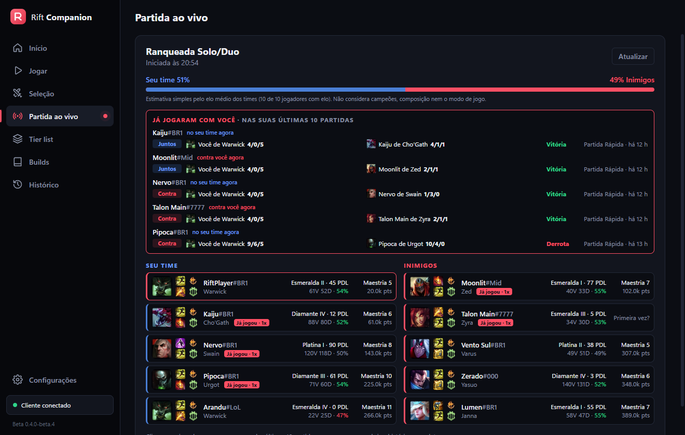
Dados de milhares de partidas ranqueadas de alto elo do BR, EUW e KR, sempre no patch atual.
Detecta o seu oponente de rota e o tipo de dano do time inimigo, mostra os counters, avisa quando a composição está desequilibrada e traz os itens que Mestres+ compram naquele confronto.
Importa a página de runas, os feitiços e o conjunto de itens direto no cliente, na seleção ou pelo celular. Nada de copiar build de site.
Elo, maestria e últimas partidas dos 10 jogadores, duos e grupos, feitiços com recarga, chance de vitória e quem já jogou com você ou contra.
Sobre o jogo, no modo sem bordas: KDA, CS e ouro, diferença para o seu oponente, CS contra a média Mestre+, qual habilidade evoluir e os timers dos objetivos.
Nota de 0 a 10 para cada jogador, pódio, ranking, gráficos de dano, ouro, CS e visão, e os destaques da partida.
Apareça offline, no celular ou online sem perder o chat de sala nem os convites. Troque pela bandeja, pelo Telegram ou pelo contato Rift Companion no chat do LoL.
Entre na fila, aceite a partida, escolha e bana campeões, troque no ARAM e importe runas pelo celular. Abra e feche o LoL de qualquer lugar da casa.
Os campeões mais fortes de cada rota e a build de qualquer campeão contra qualquer oponente, sempre no patch atual.
Crie a sala, escolha as rotas, convide amigos, aceite a partida automaticamente e veja o histórico de qualquer jogador pelo Riot ID.
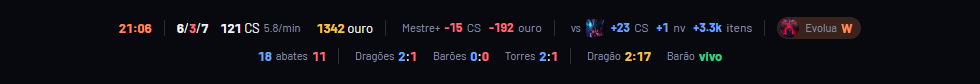
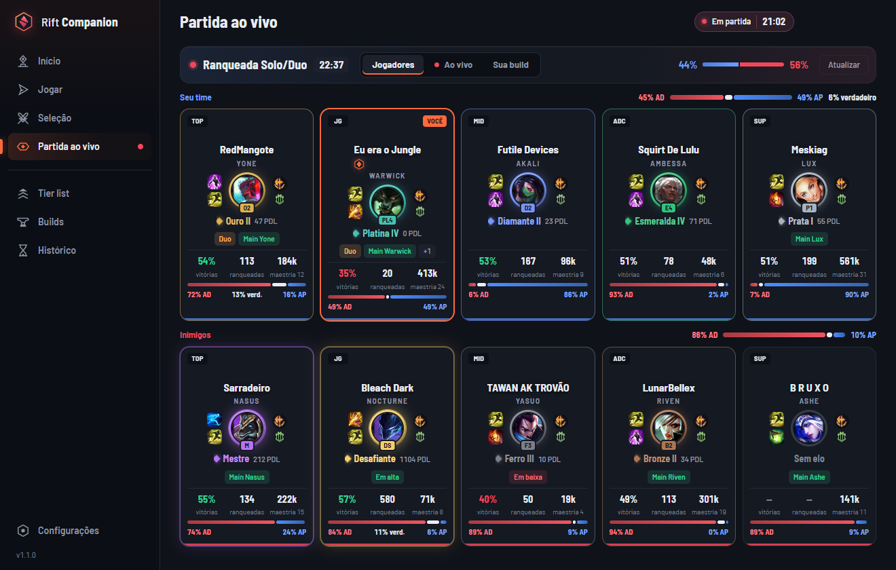
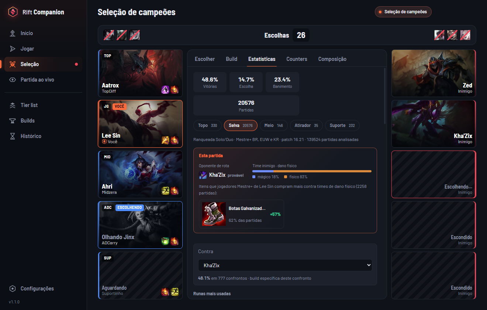
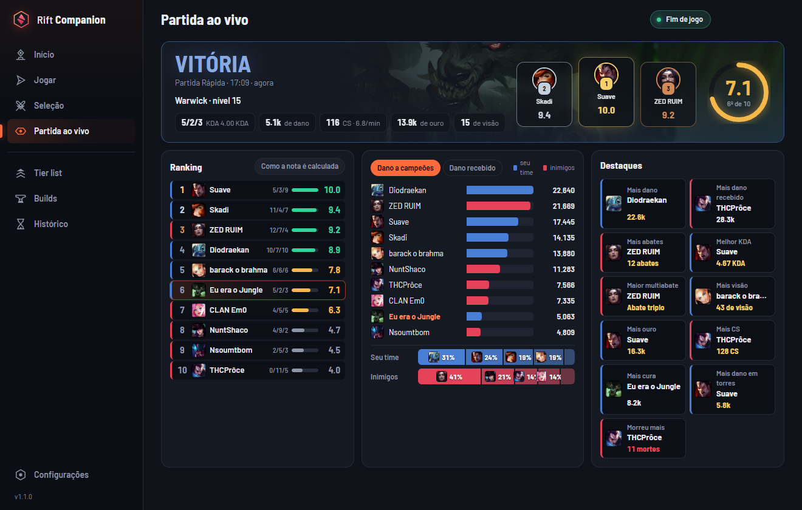
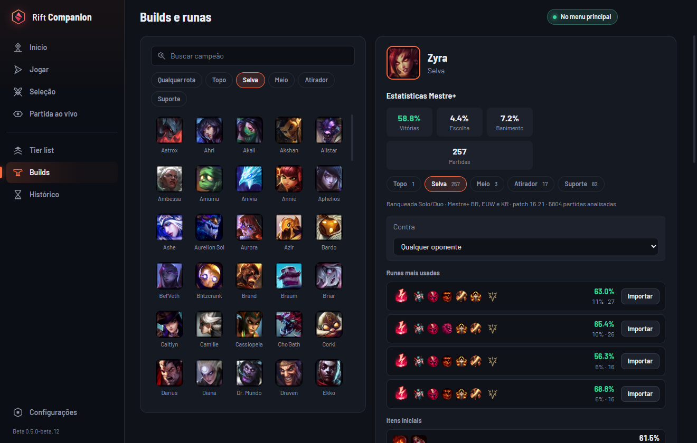
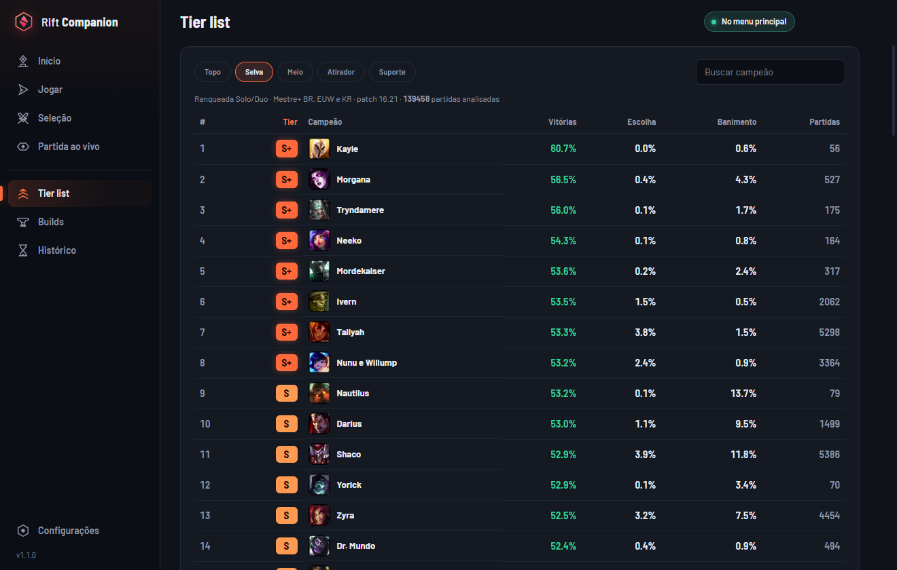
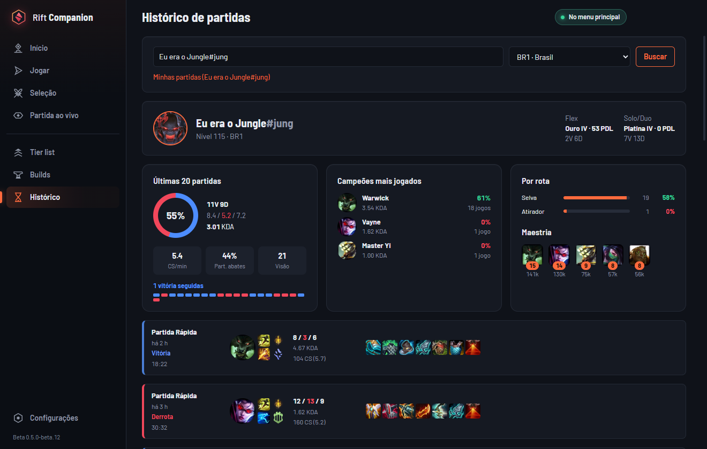
Vincule o celular ao PC lendo um QR Code, como no WhatsApp Web. Crie sala, entre na fila, aceite a partida, bane e escolhe campeões, troque no ARAM, importe runas e acompanhe a partida ao vivo — tudo pelo celular, com o mesmo visual do app.
O PC continua sendo quem fala com o LoL; o celular só mostra e comanda. A senha do LoL e a chave da Riot nunca vão ao celular. Até 5 aparelhos, cada um aprovado no PC. O app se atualiza sozinho.
Baixar APK Android Android 8 ou superior. Fora da Play Store: o Android pede para permitir a instalação.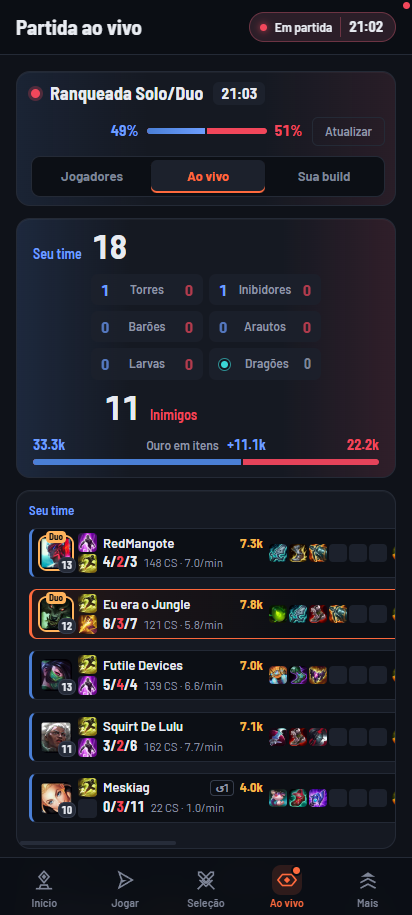
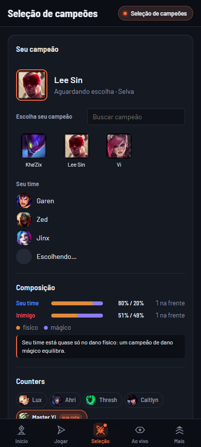
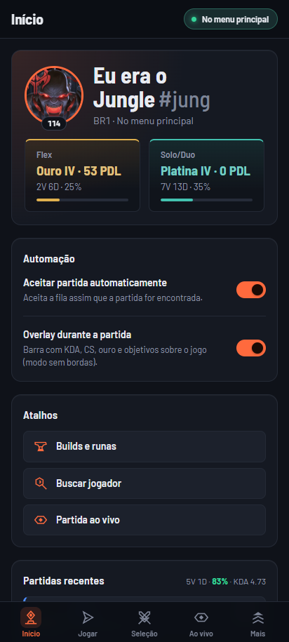
Não precisa instalar nada além do próprio app.
RiftCompanion.exe.O Windows mostrou "O Windows protegeu o computador"? Esse aviso aparece com apps novos que ainda não têm reputação na Microsoft. Clique em Mais informações e depois em Executar assim mesmo. O código do app é aberto e pode ser conferido no GitHub.
No celular? Baixe o APK Android, instale (o Android pede para permitir a instalação, é só autorizar) e, no PC, vá em Configurações › Conectar celular Android › Gerar QR Code. No app, toque em Ler QR Code do PC e confirme o aparelho no PC.
O Rift Companion segue as regras da Riot para apps de terceiros.